![[DBPP]](pictures//asm_color_tiny.gif)


![[Search]](pictures//search_motif.gif)
Next we examine how the idealized communication cost model used in preceding sections can be extended to account for characteristics of realistic interconnection networks. We review a range of network architectures and develop a more detailed model of communication performance that takes into account the impact of competition for bandwidth on communication costs. This more detailed model is still idealized but can be significantly more accurate in some circumstances.
In the idealized multicomputer architecture introduced in Chapter 1, the time required to send a message from one processor to another is independent of both processor location and the number of other processors that may be communicating at the same time. These assumptions are reflected in the communication cost model, Equation 3.1:
While accurate for many algorithms and on many architectures, this model can break down if a computer's interconnection network has properties different from the ideal, particularly if an application generates many messages. In these cases, it is necessary to develop a more detailed model of the interconnection network.
Most interconnection networks use fewer than  wires to connect
N
processors. Hence, they must include routing nodes, or
switches
, to route messages from a source processor to a
destination. A switching node may block or reroute messages when
several messages require access to the same wire at the same time.
The number of wires that must be traversed in order to get from one
processor to another is termed the distance
between those
two processors. (The distance is equal to the number of switches plus one.)
The maximum distance from any processor to any other processor is
termed the diameter
of the network. The distance between
two processors and the length of the wires connecting them are not
normally significant factors in determining performance, although
networks with long wires may be more expensive to build. (Wire length
can be important in networks extending over tens to thousands of
kilometers, where the speed of light---about 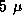sec per
kilometer in optical fiber---places a lower limit on communication
latency.)
wires to connect
N
processors. Hence, they must include routing nodes, or
switches
, to route messages from a source processor to a
destination. A switching node may block or reroute messages when
several messages require access to the same wire at the same time.
The number of wires that must be traversed in order to get from one
processor to another is termed the distance
between those
two processors. (The distance is equal to the number of switches plus one.)
The maximum distance from any processor to any other processor is
termed the diameter
of the network. The distance between
two processors and the length of the wires connecting them are not
normally significant factors in determining performance, although
networks with long wires may be more expensive to build. (Wire length
can be important in networks extending over tens to thousands of
kilometers, where the speed of light---about 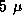sec per
kilometer in optical fiber---places a lower limit on communication
latency.)
A factor that can have a significant impact on communication performance and which we study here in some depth is competition for bandwidth. Two processors may need to send data over the same wire at the same time. Typically, only one message can be transmitted simultaneously, so the other message will be delayed. However, for many practical purposes it suffices to think of the two processors as sharing the available bandwidth. Hence, we scale the data volume term of Equation 3.1 by S , the number of processors needing to send concurrently over the same wire:
The scaling factor reflects the idea that the effective bandwidth available to each processor is 1/S of the true bandwidth.
Equation 3.10 does not account for additional contention costs that may be incurred if messages collide and must be retransmitted. (Network researchers have developed sophisticated simulation techniques to account for such effects.) However, experience shows that Equation 3.10 is sufficiently accurate for many practical purposes.
The impact of competition for bandwidth is most severe in algorithms that execute synchronously, that is, algorithms in which all processors are sending and receiving messages at approximately the same time and in which processors cannot proceed with other computation while awaiting messages. The finite difference problem and many other SPMD algorithms have this property. In algorithms such as the search and Fock matrix construction algorithms described in Chapter 2, processors execute asynchronously and are less likely to compete for bandwidth.
The value S in Equation 3.10 can depend on properties of both the parallel algorithm and the underlying interconnection network. In the following discussion, we use two examples to illustrate how the communication patterns of a particular algorithm can be analyzed to determine an approximate value for S on different networks. We first consider properties of interconnection networks.
A crossbar switch avoids competition for bandwidth by using  switches to connect N
inputs to N
outputs
(Figure 3.11). In this case, S=1
. Although
highly nonscalable, crossbar switches are a popular mechanism for
connecting small numbers of workstations, typically 20 or fewer. For
example, the DEC GIGAswitch can connect up to 22 workstations. While
larger crossbars can be constructed (for example, the Fujitsu VPP 500
uses a 224
switches to connect N
inputs to N
outputs
(Figure 3.11). In this case, S=1
. Although
highly nonscalable, crossbar switches are a popular mechanism for
connecting small numbers of workstations, typically 20 or fewer. For
example, the DEC GIGAswitch can connect up to 22 workstations. While
larger crossbars can be constructed (for example, the Fujitsu VPP 500
uses a 224  224 crossbar to connect 224 processors), they are
very expensive.
224 crossbar to connect 224 processors), they are
very expensive.
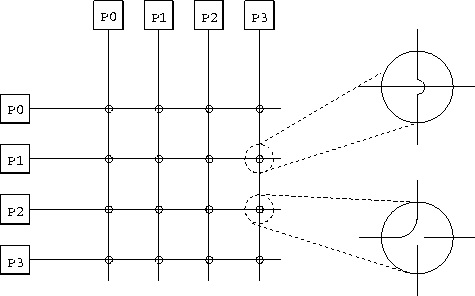
Figure 3.11: A 4 4 nonblocking crossbar, used here to connect 4
processors. On the right, two switching elements are expanded; the
top one is set to pass messages through and the lower one to switch
messages. Notice that each processor is depicted twice, and that any
pair of processors can communicate without preventing other processor
pairs from communicating.
4 nonblocking crossbar, used here to connect 4
processors. On the right, two switching elements are expanded; the
top one is set to pass messages through and the lower one to switch
messages. Notice that each processor is depicted twice, and that any
pair of processors can communicate without preventing other processor
pairs from communicating.
In a bus-based network, processors share a single communication resource (the bus). A bus is a highly nonscalable architecture, because only one processor can communicate on the bus at a time. The competition factor S is equal to the number of processors trying to communicate simultaneously.
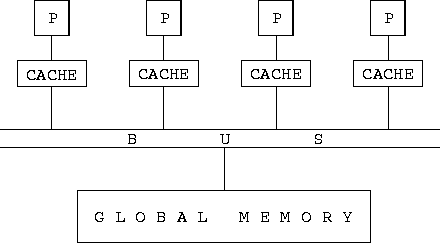
Figure 3.12: A bus-based interconnection network, here used to implement
a shared-memory parallel computer. Each processor (P) is connected to
the bus, which in turn is connected to the global memory. A cache
associated with each processor stores recently accessed memory values,
in an effort to reduce bus traffic.
Buses are commonly used in shared-memory parallel computers to communicate read and write requests to a shared global memory. In principle, the use of a global memory in a shared-memory computer simplifies parallel programming by making locality a nonissue. However, as discussed in Section 1.2.2, most shared-memory parallel computers introduce caches in an attempt to reduce bus traffic; hence, locality continues to be important.
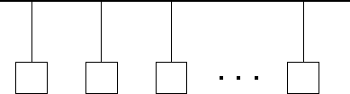
Figure 3.13: An Ethernet LAN. Multiple computers are connected to a
single Ethernet cable, which acts as a communication bus, carrying a
single signal at a time.
The Ethernet network often used in LANs to connect workstations or personal computers at a departmental level is another example of a bus-based interconnect. As noted in Table 3.1, standard Ethernet can provide network bandwidths of up to about 1 Mbytes per second. All computers connected via an Ethernet share a single communication channel (Figure 3.13). A computer that needs to send must wait until the channel is idle, then send its message; if it detects a collision, it waits a while and then retransmits. Since a computer requires exclusive access to the entire channel when sending a message, any algorithm that requires more than one processor to communicate concurrently will suffer reduced effective bandwidth. Hence, the term S in Equation 3.10 is, as in other bus-based networks, equal to the number of simultaneous senders. The impact of Ethernet bandwidth limitations on performance is illustrated in the examples that follow.
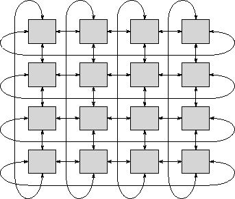
Figure 3.14: A two-dimensional torus interconnection network. This
is a 2-D mesh with end-around connections so that each processor is
connected to four neighbors.
A mesh network can be thought of as a crossbar switch (Figure 3.11) in which processors are associated with switching elements rather than being placed on the edge of the mesh. In a mesh network of dimension D , each nonboundary processor is connected to 2D immediate neighbors. Connections typically consist of two wires, one in each direction. Two- and three-dimensional meshes are commonly used in parallel computing. They have the advantage over some more sophisticated networks that they can be constructed in three-dimensional space without long wires. In a 2-D mesh, a message is communicated from processor (i,j) to processor (k,l) in 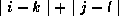 steps. One-, two- and three-dimensional cubic meshes of P processors have diameters of P-1 , 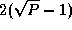, and 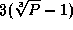 and contain 2(P-1) , 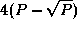, and 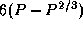 wires, respectively. As illustrated in Figure 3.14, these diameters can be halved by extending a mesh with toroidal connections so that boundary processors are also connected with neighbors. However, the torus has two disadvantages. First, longer wires are needed for the end-around connections in the 3-D case. (The need for longer wires can be avoided in a 2-D torus by folding the mesh.) Second, a subset of a torus is not a torus, so the benefits of the toroidal connections are lost if a torus-connected computer is partitioned among several users.
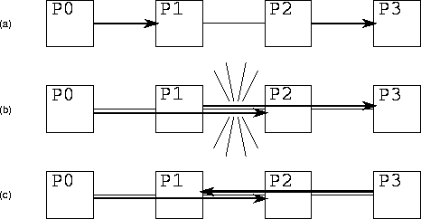
Figure 3.15: Competition for bandwidth in a 1-D mesh. In (a),
processors P0 and P1 communicate and P2 and P3 communicate. Because the two
communications use different wires, both can proceed concurrently. In
(b), processors P0 and P2 communicate and P1 and P3 communicate. The two
communications must both traverse the wire connecting P1 and P2;
hence, the two communications cannot proceed concurrently, and
S=2
. In (c), processors P0 and P2 communicate and P3 and P1 communicate.
Because each connection is bidirectional, the two communications can
proceed concurrently.
Competition for bandwidth in a mesh network occurs when two or more processors attempt to send over the same wire at the same time (Figure 3.15). The analysis used to determine S for a particular algorithm is illustrated in the examples that follow.
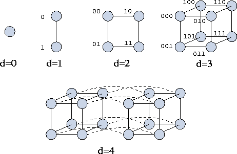
Figure 3.16: Hypercubes of dimension zero through four. The processors
in the cubes of dimension 1, 2, and 3 are labeled with integers, here
represented as binary numbers. Notice that two processors are
neighbors in dimension d
if and only if their binary labels
differ only in the d
th place. Notice also that in a hypercube
of dimension d
, a message can be routed between any pair of
processors in at most d
hops.
The hypercube network was introduced in Section 2.4.1. As in
the mesh, processors in a hypercube network are associated with
switching elements. A d
-dimensional hypercube connects each of
 processors to d
other processors. A hypercube can be
defined recursively as follows (Figure 3.16). A
zero-dimensional hypercube is a single processor and a one-dimensional
hypercube connects two zero-dimensional hypercubes. Generally, a
hypercube of dimension d+1
is constructed by connecting
corresponding processors in two hypercubes of dimension d
. As
with the mesh, the competition-for-bandwidth factor S
is
algorithm dependent, although the greater number of wires in the
hypercube means that competition for bandwidth tends to occur less
often.
processors to d
other processors. A hypercube can be
defined recursively as follows (Figure 3.16). A
zero-dimensional hypercube is a single processor and a one-dimensional
hypercube connects two zero-dimensional hypercubes. Generally, a
hypercube of dimension d+1
is constructed by connecting
corresponding processors in two hypercubes of dimension d
. As
with the mesh, the competition-for-bandwidth factor S
is
algorithm dependent, although the greater number of wires in the
hypercube means that competition for bandwidth tends to occur less
often.
The many interesting properties of hypercubes are beyond the scope of this book (but see Chapter 11). However, we note that when labeled as shown in Figure 3.16, two processors are connected if and only if the binary representation of their labels differs in a single position. We exploit this property when specifying algorithms that use the hypercube communication structure. Another important feature of a hypercube is that it contains a mesh: it may be considered a mesh with additional, long-distance connections. The additional connectivity reduces the diameter to d and increases the number of available wires, particularly for nonlocal communication. A disadvantage of the hypercube interconnect from an engineering point of view is that it is more complex than the mesh. In particular, it requires more and longer wires, since a hypercube with dimension greater than three cannot be laid out in three-dimensional space so that wires connect only physically adjacent processors.
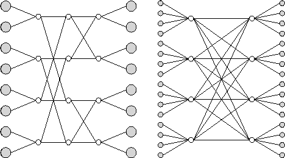
Figure 3.17: Example multistage interconnection networks. Shaded circles
represent processors and unshaded circles represent crossbar switches.
The network on the left has k=2
and n=3
; on the right,
k=4
and n=2
. The network can be constructed from unidirectional
switches and links, in which case it is folded so that the processors
on the left and right are the same. Alternatively, it can be
constructed from bidirectional switches and links, in which case
processors on the left and right are
distinct.
In a multistage interconnection network (MIN), as in a crossbar,
switching
elements are distinct from processors. However, fewer than 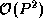
switches are used to connect P
processors. Instead, messages
pass through a series of switch stages. Figure 3.17
illustrates two MINs, which are representatives of a general class of networks
characterized by parameters n
and
k
. These networks are sometimes referred to as radix k
,
dimension n
butterflies, or k
-ary n
-flies. Either
n
stages of 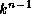 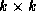 unidirectional crossbar
switches connect processors, or n
stages of
bidirectional crossbar switches connect  processors. In the latter case, each link comprises two channels
that carry data in opposite directions, and each crossbar switch can
route data arriving on any of 2k
inputs to any of
2k
outputs. Notice that each stage of these networks connects
P
inputs with P
outputs, although not every input is directly
connected to every output in each stage.
processors. In the latter case, each link comprises two channels
that carry data in opposite directions, and each crossbar switch can
route data arriving on any of 2k
inputs to any of
2k
outputs. Notice that each stage of these networks connects
P
inputs with P
outputs, although not every input is directly
connected to every output in each stage.
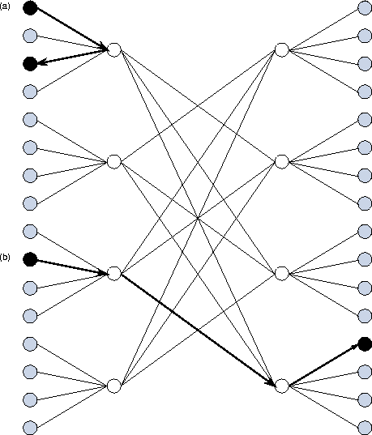
Figure 3.18: Communications in a bidirectional MIN. The communication
indicated at (a) involves processors connected to the same crossbar;
it takes just two hops and passes through a single switch. The
communication at (b) takes three hops and passes through two
switches.
In a unidirectional MIN, all messages must traverse the same number of wires, and so the cost of sending a message is independent of processor location. In effect, all processors are equidistant. In a bidirectional MIN, the number of wires traversed depends to some extent on processor location, although to a lesser extent than in a mesh or hypercube (Figure 3.18).
The fact that messages destined for different destinations may need to pass over the same wire means that MINs are not immune to competition for bandwidth. Nevertheless, a MIN connecting P processors typically provides P wires at each stage, so in principle we should be able to organize communications so that little competition occurs.
 .
. Competition for Bandwidth in Finite Difference:
Competition for Bandwidth in Finite Difference:
In the first of two examples, we consider the impact of competition for bandwidth in an algorithm with a high degree of locality: the one-dimensional finite difference algorithm examined in preceding sections. Recall from Equation 3.3 that according to the idealized model of Equation 3.1, the per-processor communication costs for this algorithm are
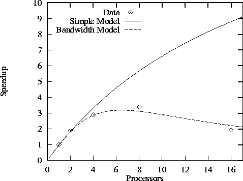
Figure 3.19: Speedup of finite difference code with N=512
and
Z=5
as measured on Ethernet-connected IBM RS6000 workstations
and as predicted both by a simple performance model that does not take
into account competition for bandwidth and by a more sophisticated
model that does. Both models assume that 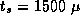sec and
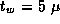sec.
Competition for bandwidth is not an issue on a mesh or hypercube because the one-dimensional ring-based communication structure of the finite difference problem can be embedded in these networks using only nearest-neighbor connections. On a bus-based network, only one of the P processors can communicate at one time; if we assume that in the communication phase of the algorithm, half the processors need to send at once (the other half are receiving), then S=P/2 and the communication volume term must be scaled by a factor of P/2 , giving
Figure 3.19 illustrates both the large impact that bandwidth limitations can have on the performance of even a simple algorithm such as finite difference and the improved accuracy of the refined performance model. The figure shows performance measured on Ethernet-connected workstations and as predicted by Equations 3.3 and 3.11. We see that the more sophisticated model is reasonably accurate.
 . Competition for Bandwidth in Butterfly:
. Competition for Bandwidth in Butterfly:
As a second example, we consider an algorithm in which P
tasks
use the butterfly (or hypercube) communication structure
illustrated in Figure 2.14 to perform  exchanges of
N/P
data. The summation algorithm described in Section 2.4.1
has this form. Other algorithms with similar characteristics are
described in Chapter 11.
exchanges of
N/P
data. The summation algorithm described in Section 2.4.1
has this form. Other algorithms with similar characteristics are
described in Chapter 11.
Per-processor communication costs associated with this algorithm are, in the absence of competition for bandwidth,
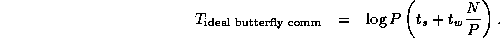
The algorithm can, of course, execute without competition for
bandwidth on a crossbar switch. Somewhat less obviously, it can also
execute without competition for bandwidth on a P
-processor
hypercube: Computation and communication can be organized so that each
of the  processors with which a processor must communicate is
a neighbor on one of the hypercube links. On a bus-based network,
only one processor can communicate at a time; hence, as in the finite
difference algorithm considered in Example 3.7, we assume
S=P/2
and from Equation 3.10 we have
processors with which a processor must communicate is
a neighbor on one of the hypercube links. On a bus-based network,
only one processor can communicate at a time; hence, as in the finite
difference algorithm considered in Example 3.7, we assume
S=P/2
and from Equation 3.10 we have
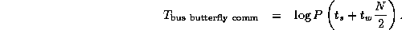
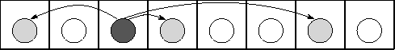
Figure 3.20: Execution of the butterfly summation algorithm on an
eight-processor, one-dimensional mesh. Shading is used to highlight a
single task and its communication partners, which are one, two, and
four hops distant.
On a mesh, the limited number of wires becomes an issue. For example,
on a one-dimensional mesh of P
processors, each processor
generates messages that must traverse 1, 2, ..., 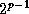 hops in the
p
steps of the algorithm (Figure 3.20). These
messages travel a total of 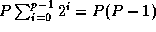 hops.
This represents the number of wires to which each processor requires
exclusive access during execution of the summation. As a
one-dimensional bidirectional mesh provides only 2(P-1)
wires,
we see that the parallel algorithm cannot possibly proceed in less
than P/2
steps rather than  steps as supposed
previously. In fact, it can proceed in P/2
steps only if we can
define a communication schedule that keeps all wires busy all the
time. Hence, the following model represents a lower bound on
communication costs:
steps as supposed
previously. In fact, it can proceed in P/2
steps only if we can
define a communication schedule that keeps all wires busy all the
time. Hence, the following model represents a lower bound on
communication costs:
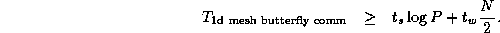
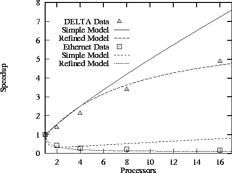
Figure 3.21: Performance of parallel FFT in a spectral transform code
on a one-dimensional mesh in Intel DELTA and on Ethernet-connected
RS/6000 processors. The simple models do not take into account
competition for bandwidth; the refined models do, and give a better
fit to observed performance.
Figure 3.21 compares observed speedups with those
predicted by the simple and bandwidth-limited performance models on a
one-dimensional mesh and on an Ethernet. These results are from an
atmosphere modeling code that uses a parallel fast Fourier transform
(FFT) to parallelize a numerical method called the spectral transform.
The details of the numerical method are not important here; what is
relevant is that at each step, the code must perform two butterfly
communication operations (specifically, FFT) on a large array.
Details of the two experiments are given in Table 3.6. (The
 term used on the DELTA is significantly smaller than in the
finite difference code of Example 3.6; this reflects the
fact that the communication code in the FFT implementation on the
DELTA had been carefully optimized.)
term used on the DELTA is significantly smaller than in the
finite difference code of Example 3.6; this reflects the
fact that the communication code in the FFT implementation on the
DELTA had been carefully optimized.)
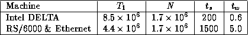
Table 3.6: Parameters for butterfly performance study ( N
in words,
times in  sec).
sec).
© Copyright 1995 by Ian Foster